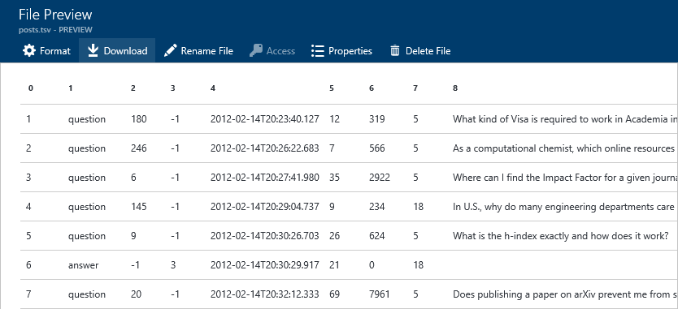
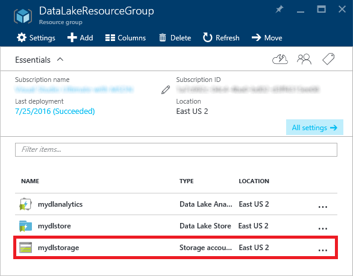

Handling Big-Data Workloads with Azure Data Lake
Overview
Azure Data Lake enables you to collect data of any size, type, and velocity in one place in order to explore, analyze, and process the data using tools and languages such as U-SQL, Apache Spark, Hive, HBase, and Storm. It works with existing IT investments for identity, management, and security for simplified handling and governance. It also integrates easily with operational stores and data warehouses.
Data Lake consists of two primary elements: Azure Data Lake Store and Azure Data Lake Analytics. Data Lake Store is an enterprise-wide hyper-scale repository for big-data analytical workloads. It was build from the ground up to support massive throughput and integrates with Apache Hadoop by acting as an HDFS distributed file system. It also supports Azure Active Directory for access control independent of Hadoop. Data Lake Analytics is an easy-to-learn query and analytics engine that features a new query language called U-SQL, which combines elements of traditional SQL syntax with powerful expression support and programmatic extensibility. It integrates seamlessly with Data Lake Store so you can execute queries against multiple disparate data sources as if they were one. This lab will introduce you to Data Lake Store and Data Lake Analytics and walk you through typical usage scenarios for each.
Objectives
In this hands-on lab, you will learn how to:
- Create Data Lake Stores
- Create Data Lake Analytics accounts and connect them to Data Lake Stores
- Import data into Azure Data Lake Stores
- Run U-SQL jobs in Azure Data Lake Analytics
- Federate Azure SQL Databases and query them with U-SQL
Prerequisites
The following are required to complete this hands-on lab:
Exercises
This hands-on lab includes the following exercises:
Estimated time to complete this lab: 60 minutes.
Exercise 1: Create an Azure Data Lake Store
The starting point for using Azure Data Lake is setting up an Azure Data Lake Store to serve as a repository for various data sources. In this exercise, you will create a new Azure Data Lake Store in your Azure subscription. Later, you will import data into the Data Lake Store and query it with U-SQL.
-
In your browser, navigate to the Azure Portal. If you're asked to sign in, do so using your Microsoft account.
-
In the portal, click + New -> Intelligence + analytics -> Data Lake Store (preview).

Adding a new Data Lake Store
-
In the "New Data Lake Store" blade, enter a unique name for your Data Lake Store in all lowercase. The name must be unique within Azure since it becomes part of the store's DNS name. Make sure Create new is selected under Resource Group, and then enter a resource-group name such as "DataLakeResourceGroup" (without quotation marks). Choose the location nearest you, and then click Create.
If there are any input errors, such as spaces in the resource-group name, the offending fields will be flagged with red exclamation points rather than green check marks. Hover the mouse cursor over an exclamation point for help resolving the error.

Creating a Data Lake Store
-
Click Resource groups in the ribbon on the left, and then click the resource group whose name you specified in the previous step.

Opening the resource group
-
When "(Deploying)" changes to succeeded, the Data Lake Store has been created. Deployment typically takes a minute or less. You may have to refresh the page in your browser to ascertain that the deployment has finished.

Deployment succeeded
Now that you have created a Data Lake Store, the next step is to create a Data Lake Analytics account so you can run queries against the store.
Exercise 2: Create an Azure Data Lake Analytics account
Azure Data Lake formally separates the concepts of storing data and querying data. This allows Azure Data Lake Analytics to operate against a range of possible data sources contained in an Azure Data Lake Store. In this exercise, you will create a Data Lake Analytics account and connect it to the Data Lake Store you created in Exercise 1.
-
In the portal, click + New -> Intelligence + analytics -> Data Lake Analytics (preview).

Adding a new Data Lake Analytics account
-
In the "New Data Lake Analytics" blade, enter a name for the new account. Once more, the name must be unique across Azure because it becomes part of a DNS name. Select Use existing under Resource Group and select the resource group that you created in Exercise 1. Then select the same location you selected for the Data Lake Store in Exercise 1. Finally, click Data Lake Store and select the Data Lake Store you created in Exercise 1 to associate the Data Lake Analytics account with your Data Lake Store.
When you're finished, click the Create button at the bottom of the "New Data Lake Analytics" blade.

Creating a Data Lake Analytics account
-
Return to the resource group that holds the Data Lake Store and the Data Lake Analytics account. Click the Data Lake Analytics account and wait for "(Deploying)" to change to "(Succeeded)." Once more, it helps to refresh the page every now and then to make sure the information displayed there is up to date.
You now have Azure Data Lake storage and query capability set up in your Azure subscription. The next task is to add some data to query.
Exercise 3: Import data into Azure Data Lake Store
This lab's "resources" directory holds two tab-delimited TSV files containing sample data. This data comes from the public domain and consists of questions and answers from the popular academia-focused site http://academia.stackexchange.com. In this exercise, you will import the sample data into your Azure Data Lake Store so you can execute queries against it.
-
In the portal, open the Azure Data Lake Store that you created in Exercise 1. (An easy way to do that is to open the resource group and then click the Data Lake Store resource.) In the blade for the Data Lake Store, click Data Explorer near the top.

Opening Data Explorer
-
A new blade will open. At the top, click Upload.

Opening the "Upload files" blade
-
In the "Upload files" blade, click the folder icon and select the posts.tsv file in this lab's "resources" directory. Then click Start upload. The file is 60 MB in length, so the upload will take a few minutes.

Uploading posts.tsv
-
Repeat this process to upload comments.tsv, which is also located in the "resources" directory. Then close the "Upload files" blade and return to the blade for your Data Lake Store. Confirm that both of the data files you uploaded appear there:

The uploaded data files
-
Click posts.tsv to open a "File Preview" blade showing the contents of the file.

File preview
The file preview only shows a portion of the data file. The next step is to query the data to extract the information you want from it. For that, Azure Data Lake Analytics provides U-SQL.
Exercise 4: Query a TSV file with U-SQL
U-SQL is a language created by Microsoft that combines traditional SQL Data Definition Language (DDL) and Data Manipulation Language (DML) constructs with expressions, functions, and operators based on the popular C# programming language. It marries the benefits of SQL with the power of expressive code. And it is supported natively in Azure Data Lake Analytics. In this exercise, you will use U-SQL to query the data you imported in Exercise 3.
-
In the portal, open the Azure Data Lake Analytics account that you created in Exercise 2. In the ensuing blade, click New Job to create a new U-SQL job.

Creating a new U-SQL job
-
In the "New U-SQL Job" blade, paste the following query into the empty query field:
// here we define the schema for the imported posts.tsv file
@posts =
EXTRACT id int,
[type] string,
acceptedanswerid int?,
parentquestionid int?,
creationdate string,
score int,
views int,
ownerid int,
title string,
body string,
tags string,
answers int,
comments int
FROM "posts.tsv"
USING Extractors.Tsv();
// here we transform the imported data using various aggregate functions
@results =
SELECT
ownerid AS userid,
SUM(score) AS totalscore,
COUNT(*) AS totalposts
FROM @posts
GROUP BY ownerid;
// finally we output the transformed data for further analysis or visualization
OUTPUT @results
TO "totalscores.csv"
ORDER BY totalscore DESC
USING Outputters.Csv();
Here's how the blade will look after the query is entered:

A U-SQL query
The query contains three main parts. The EXTRACT statement extracts data from an existing data source, in this case the posts.tsv file you uploaded to the Data Lake Store. The SELECT statement transforms the input data into a shape suitable to the task at hand. Finally, the OUTPUT statement outputs the result as a named rowset, which can be used for further analysis or visualization.
-
Click the Submit Job button at the top of the blade. A new blade will open to show what is happening as the Data Lake Analytics engine prepares, queues, and executes your query. The job is complete when the "Finalizing" step turns green.

The completed job
-
Return to the blade for your Data Lake Store and click Data Explorer. Then click totalscores.csv to view the query results and verify that it contains three columns of data.

Viewing the query results
In the next two exercises, you will build on what you learned here by joining multiple data sources and performing more complex queries against the aggregated data. Now that you know to set up a Data Lake Store, import data, connect it to Data Lake Analytics, and execute U-SQL queries, the fundamentals are in place.
Exercise 5: Create an Azure SQL Database as a federated data source
In the previous exercise, you issued a simple query against a single file in an Azure Data Lake Store. To make things more interesting, you are now going to create a SQL database in your Azure subscription and configure it to serve as a federated data source in Data Lake Analytics. This will allow you to not only query the database with U-SQL, but also join data from the database to data already residing in your Data Lake Store. This demonstrates the power of Azure Data Lake as a distributed storage and analytics engine.
Enabling federated queries will require a series of steps:
- Create an Azure storage account in your Azure subscription
- Upload a SQL database backup file (a .bacpac file) to the new storage account
- Create a new SQL database in your Azure subscription and restore it from the .bacpac file
- Configure your Data Lake Analytics account to query against the database
Let's get started!
-
In the Azure Portal, click + New -> Storage -> Storage account.

Adding a storage account
-
In the ensuing "Create storage account" blade, enter a name for the new storage account in Name field. Storage account names must be 3 to 24 characters in length and can only contain numbers and lowercase letters. In addition, the name you enter must be unique within Azure. If someone else has chosen the same name, you'll be notified that the name isn't available with a red exclamation mark in the Name field.
Once you have a name that Azure will accept (as indicated by the green check mark in the Name field), make sure Resource manager is selected as the deployment model and General purpose is selected as the account kind. Then select Locally-redundant storage (LRS) as the replication type.
Select Use existing under Resource group and select the resource group that you created in Exercise 1. Then select the location that you selected for the Data Lake Store. Finish up by clicking the Create button at the bottom of the blade to create the new storage account.

Creating a new storage account
-
Once the storage account has been created, click Resource groups in the ribbon on the left side of the portal, and then click the resource group that holds the storage account. Now click the storage account to open a blade for that account.

Opening the storage account
-
You need to create a container in the storage account to hold your database backup. To begin, click Blobs in the storage account's blade.

Opening blob storage
-
Click + Container at the top of the blade.

Adding a container
-
Enter the name "bacpacs" (without quotation marks) for your new blob container, and then click Create:

Creating a new container
-
Return to the storage account's blade and click the key icon:

Viewing the storage account's access keys
-
In the "Access keys" blade, click the Copy button to the right of key1 to copy the storage account's primary access key to the clipboard. Then paste the access key into your favorite text editor so you can easily access it again in a few moments.

Copying the storage account's access key
-
Now you need to upload the database backup file (academics-stackexchange-users.bacpac, provided for you in this labs "resources" directory) to the new storage account. You'll do that using the cross-platform Azure command line interface, commonly referred to as the "Azure CLI".
If you haven't already downloaded and installed the Azure CLI, do so now. You'll find instructions at https://azure.microsoft.com/en-us/documentation/articles/xplat-cli-install/. The Azure CLI is a Node.js application, so Node.js must be installed before you can run the CLI. You can download Node.js from https://nodejs.org/en/ if it isn't already installed on your computer.
-
Open a command shell (Bash, Terminal, command prompt, etc.) and execute the following command:
azure login
-
Copy the access code presented to you in the command shell. Then open a browser window and navigate to https://aka.ms/devicelogin and enter the code. If prompted to log in, do so using your Microsoft account. Upon successful authentication, your command-line session will be connected to your Azure subscription.
-
Assuming you are using the Azure Pass subscription provided to you for working these labs, execute the following command to ensure that Azure Pass is the active subscription (the subscription that will be charged against) for operations performed with the CLI:
azure account set "Azure Pass"
-
In the command shell, navigate to this lab "resources" directory. Then execute the following command, substituting the name of the storage account you created in Step 2 for storage_account_name, and the access key you copied in Step 8 for storage_account_key:
azure storage blob upload -a "storage_account_name" -k "storage_account_key" -f "academics-stackexchange-users.bacpac" --container "bacpacs" -b "academics-stackexchange-users.bacpac"
Keep the shell open when you are done; you will need it later on.
-
Return to the Azure Portal and to the blade for the storage account. Click Blobs, and then click the bacpacs container. Verify that the container now contains a blob named academics-stackexchange-users.bacpac:

Database backup in Azure storage
-
The next step is to add a new SQL database server. In the Azure portal, click Browse -> SQL servers:

Listing SQL servers
-
Click + Add in the "SQL servers" blade:

Adding a SQL server
-
In the ensuing blade, enter the parameters for a new SQL server, beginning with a unique name. (It must be unique across all of Azure; be sure a green check appears in the box.) Enter "azureuser" (without quotation marks) as the user name, and "AzurePass!" (again without quotation marks) as the password. Under Resource group, select Use existing and select the same resource group you have used throughout this lab. For Location, select the same location you selected in previous exercises. When you're finished, click the Create button at the bottom of the blade.

Creating a new SQL server
After a few moments, the SQL server will be created. Click the Refresh button at the top of the "SQL servers" blade and make sure the new SQL server appears in the list of SQL servers associated with your subscription.
-
Next, you need to create a new database instance using the blob you uploaded a few moments ago. In the "SQL servers" blade, click the SQL server you just created. Then click Import database at the top of the ensuing blade:

Importing a database
-
In the "Import database" blade, click Subscription and choose your Azure Pass subscription. Then click Storage and select the storage account that you uploaded the .bacpac file to, followed by the "bacpacs" container and, after that, the blob you uploaded to that container. Finally, enter "azureuser" as the user name and "AzurePass!" as the password, both without quotation marks. Finish up by clicking OK at the bottom of the blade.

Specifying database import options
-
While you wait for the database instance to be created, click Show firewall settings on the database-server blade and add an IP range entry to allow Data Lake Analytics to communicate with your server during federated query execution. Type the following values into the three text boxes and then click Save at the top of the "Firewall settings" blade:
- Rule Name: Allow Data Lake
- Start IP: 25.66.0.0
- End IP: 25.66.255.255

Configuring the firewall
-
Now that you have a SQL database instance up and running, the final step is to register it with Data Lake Analytics for federation. Navigate back to your Data Lake Analytics account in the portal and click New Job at the top of the blade. In the "New U-SQL Job" blade, enter the following statement and then click Submit Job to run the job:
CREATE DATABASE UserIntegration;
-
Return to the command shell and execute the following commands to create a Data Lake catalog secret containing SQL server connection and authentication information for federated query execution. Substitute your Data Lake Analytics account name for analytics_account_name and your database server name (the one specified in Step 17 of this exercise) for database_server_name:
azure config mode arm
azure datalake analytics catalog secret create "analytics_account_name" "UserIntegration" "tcp://database_server_name.database.windows.net:1433"
When prompted for a catalog secret name, type "user-integration-secret" without quotation marks. When prompted for a password, enter the password for your SQL server account ("AzurePass!"), which you specified in Step 19 of this exercise.
-
Return to your Data Lake Analytics account in the Azure Portal. Then click + New Job and execute the following query:
USE DATABASE UserIntegration;
CREATE CREDENTIAL IF NOT EXISTS FederatedDbSecret WITH USER_NAME = "azureuser", IDENTITY = "user-integration-secret";
CREATE DATA SOURCE IF NOT EXISTS AcademicSEDb FROM AZURESQLDB WITH
( PROVIDER_STRING = "Database=academics-stackexchange-users;Trusted_Connection=False;Encrypt=True",
CREDENTIAL = FederatedDbSecret,
REMOTABLE_TYPES = (bool, byte, sbyte, short, ushort, int, uint, long, ulong, decimal, float, double, string, DateTime) );
CREATE EXTERNAL TABLE User (
[id] int,
[reputation] int,
[created] DateTime,
[displayname] string,
[lastaccess] DateTime,
[location] string
) FROM AcademicSEDb LOCATION "dbo.User";
This query creates a credential using the "user-integration-secret" catalog secret, configures your SQL database as a data source authenticated with the new credential, and then creates a named table in your local Data Lake Analytics database which is backed by the SQL data source.
That was a lot of work, but you are now ready to issue federated queries. Let's try it out!
Exercise 6: Perform a federated query with U-SQL
Two of the most compelling features of Data Lake Analytics are its ability to federate external data sources (meaning, query them in their native storage, with copying) and its ability to address multiple disparate data sources in a single query. In this exercise, you'll use both to join data from the SQL database you created in Exercise 5 with data in the tab-delimited file you imported in Exercise 3.
-
In the Azure Portal, navigate to your Data Lake Analytics account and click + New Job. Paste the following query into the query-text field and click Submit Job to run the job.
USE DATABASE UserIntegration;
// here we define the schema for the imported posts.tsv file
@posts =
EXTRACT id int,
[type] string,
acceptedanswerid int?,
parentquestionid int?,
creationdate string,
score int,
views int,
ownerid int,
title string,
body string,
tags string,
answers int,
comments int
FROM "posts.tsv"
USING Extractors.Tsv();
// here we find the earliest post date per user... note the C# date conversion
@earliest_posts =
SELECT
ownerid,
MIN(DateTime.Parse(creationdate)) AS created
FROM @posts
GROUP BY ownerid;
// now we join to the external SQL Database table to add user names to the output
@results =
SELECT
u.[displayname] AS [name],
ep.[created] AS [first_post_date]
FROM
User AS u
INNER JOIN @earliest_posts AS ep ON ep.[ownerid] == u.[id];
// finally we output the transformed data for further analysis or visualization
OUTPUT @results
TO "firstposts.csv"
USING Outputters.Csv();
This query first applies structure to the data in posts.tsv and then queries that file for the earliest post by each user. Then it joins the query results to the external database table created in the previous exercise and performs another query to associate a user name with each post. Finally, it writes the output of this query to firstposts.csv. Note the call to DateTime.Parse embedded in the query. This is an example of how C# expressions can be included in U-SQL to richen the queries you perform.
-
Once the job has run successfully, open the blade for your Data Lake Store and click Data Explorer near the top. Confirm that the Data Lake Store contains a file named firstposts.csv. Then click the file.

First posts CSV query results
-
Confirm that the file contains two columns of data: one for name of each user who posted in the discussion forum, and another for the time and date of each user's first post.
You just demonstrated that U-SQL can be used to query multiple data sources of different types. You also saw one example of how C# expressions can be used to richen queries in U-SQL.
Summary
Azure Data Lake provides a hyperscale, enterprise-wide repository where different types of data can be collected without regard to size, structure, or velocity. Once aggregated in a Data Lake Store, data can be analyzed with Azure Data Lake Analytics, or processed with popular open-source tools such as Apache Hadoop and Apache Spark hosted in Azure HDInsight. In this lab, you learned how to import various types of data into a Data Lake Store and use Azure Data Lake Analytics to query the combined data with U-SQL.
Azure Data Lake does not itself provide tools for visualizing query results, but other components of Azure and the Azure ecosystem do. For example, Microsoft Power BI can be used to visualize query results and can even be connected directly to a Data Lake Store. For more information about combining Azure Data Lake with Power BI and a tutorial to help guide the way, see Analyze data in Data Lake Store by using Power BI.
Copyright 2016 Microsoft Corporation. All rights reserved. Except where otherwise noted, these materials are licensed under the terms of the Apache License, Version 2.0. You may use it according to the license as is most appropriate for your project on a case-by-case basis. The terms of this license can be found in http://www.apache.org/licenses/LICENSE-2.0.